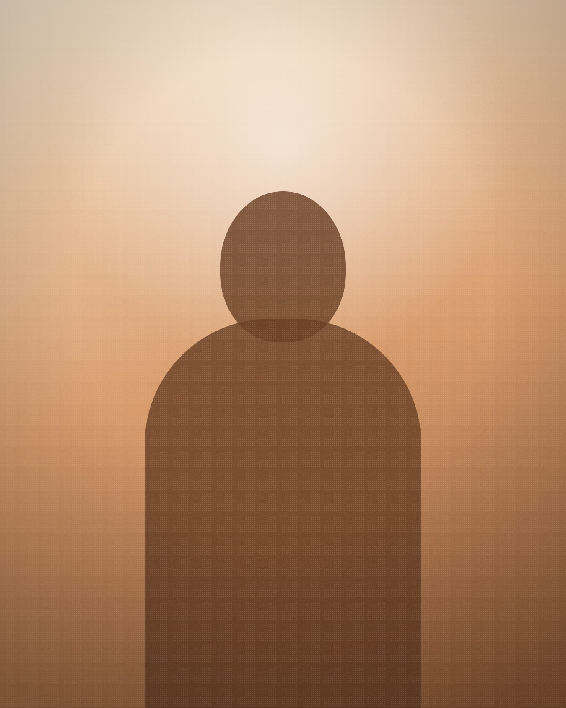

What changes when it has a shape:
✦
you stop deciding the same thing twice
✦
the work survives a bad week
✦
you can hand a piece of it to someone else
✦
you can see what is missing
None of that requires
more hours.